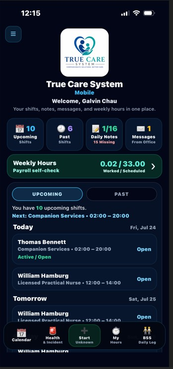

MOBILE EVV • DAILY OPERATIONS
Mobile Dashboard
A consolidated command center for shifts, hours, notes, and messages.
Mobile EVV pages may display PHI, workforce data, GPS evidence, service records, and operational processes. Screenshots in this public guide use redacted or demonstration information. Certain compliance logic, validation rules, escalation paths, and proprietary workflows are intentionally summarized and are trained directly for authorized Provider customers.
Purpose
The dashboard gives the DSP one place to review upcoming and past shifts, missing Daily Notes, office messages, weekly hours, and the next required action.

Key Functions
Upcoming and past shifts
Shows the user current mobile workload.
Daily Note counters
Highlights completed and missing notes.
Office messages
Surfaces Provider decisions and announcements.
Standard Workflow
Open the correct workspace
Start from the dashboard or role-aware menu.
Verify context
Confirm Provider, Individual, service, date, and task.
Complete and submit
Enter required information and save or submit.
Review status
Confirm success, office follow-up, or correction needs.
Compliance and Provider Controls
Access is role-based and Provider-scoped. Actions may retain user identity, timestamps, device context, GPS evidence, visit references, and audit history. Provider policy controls who may submit, review, correct, approve, reopen, or export records.
Operational Value
This workspace reduces paper forms, disconnected messages, duplicate entry, and separate systems. Field activity can support office review, staffing, compliance, reporting, payroll, billing, and quality management through one connected platform.